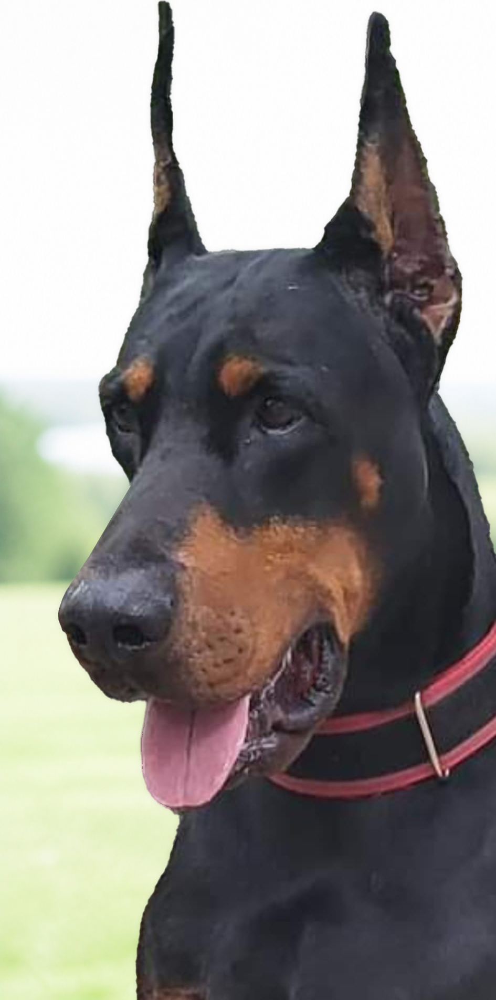
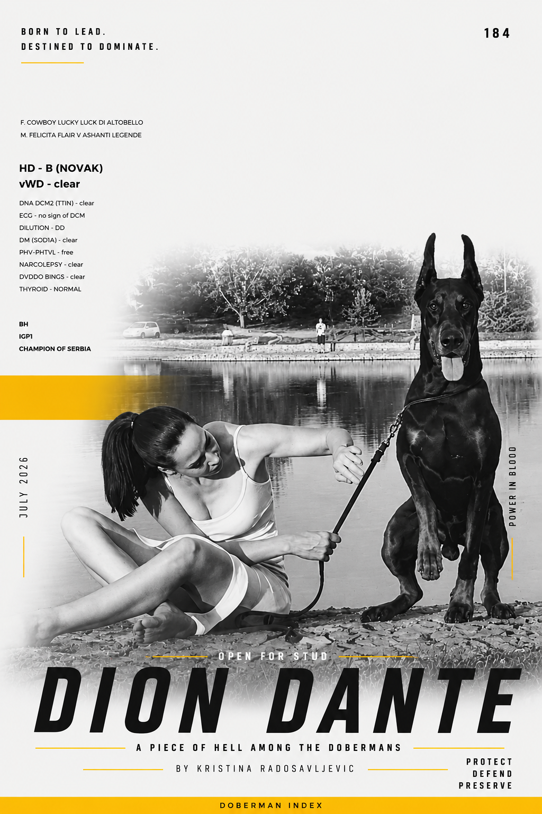
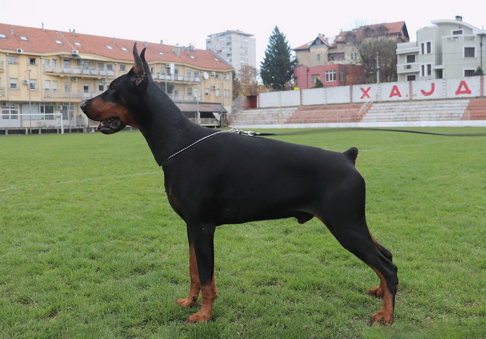
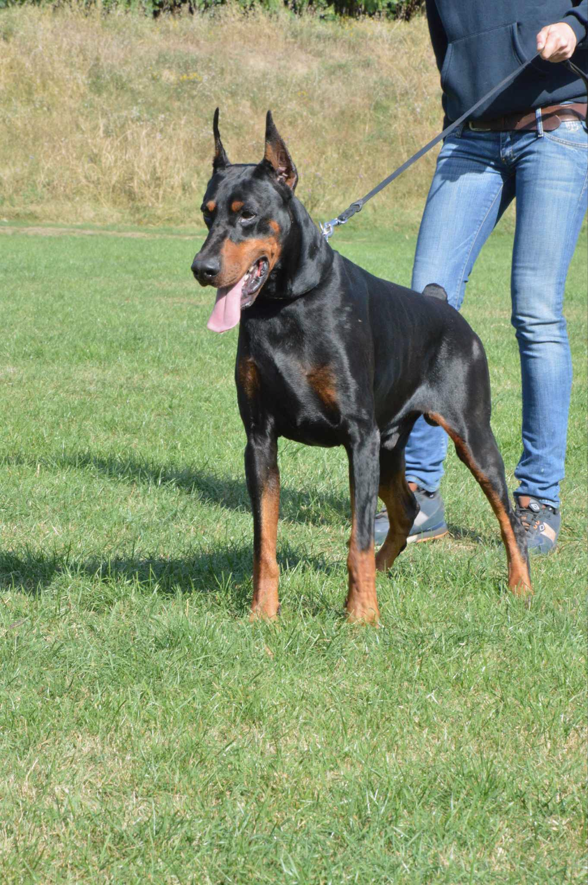
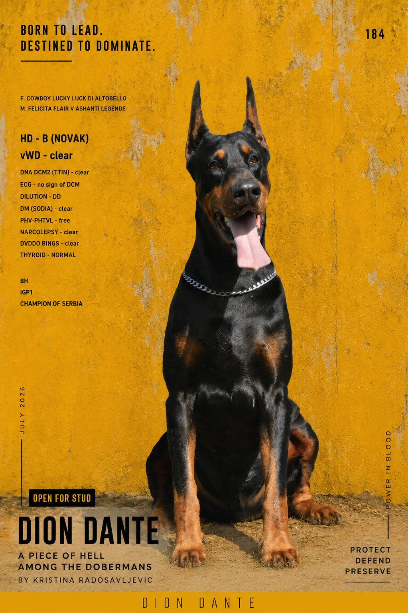

DOBERMAN INDEX®
Siempre Peligroso · Serbia
A structured profile connecting submitted health data, computed ancestry, performance and breeding intelligence.

Siempre Peligroso · Serbia
A structured profile connecting submitted health data, computed ancestry, performance and breeding intelligence.
Comparable visual recordHead, profile, stack and movement create the first comparable view of every indexed Doberman. The short video records a continuous natural trot.




Standardized media creates a comparable observation layer. This review build exposes the fields without inventing a score before the movement source is evaluated.
Structured visual observation — not a veterinary or conformation judgement.One record. Six views.Health, structure, temperament, performance and lineage forward now live inside one persistent desk instead of five separate long sections.
Identity and provenance stay visible while deeper data opens only when needed.
Submitted clinical status is never collapsed into a genetic-marker verdict.
Owner-evaluated descriptors stay explicit about their source.
Traits are stored as a structured snapshot with evaluator provenance.
Counts remain linked to the underlying title and exam record.
Progeny, litters, siblings and connected records extend this profile forward and sideways.
4-generation interactive pedigreeUse the yellow edge to unfold each ancestry branch. Select a registered name marked → to inspect that Doberman in full stance.
Pedigree → record → pairing.First understand the ancestry, then interpret the current Doberman record, then test one specific pairing.
Calculated, not self-reportedPedigree COI, completeness and repeated ancestry are generated from canonical pedigree nodes. Unknown ancestry remains visible.
Shared ancestry estimated from the mapped pedigree. DNA COI is a separate measurement.
The same canonical tree can expose recurrence, contribution, branch concentration and the exact path behind the COI value.
Clinical + geneticClinical cardiac status and genetic markers remain separate. DCM 1–DCM 5 open only when detailed review is needed.
Controlled vocabularyThe same descriptive structure keeps every indexed profile clear and comparable.
Observed traitsConsistent terms make stability, drive, confidence and social behaviour easier to compare.
Submitted recordShows, titles, working exams and sports presented as a single comparable snapshot.
Lineage in motionNamed progeny, connected litters and indexed descendants extend one Doberman record into a growing lineage history.
Each connected descendant adds another verified relationship to the living lineage map and reveals how this bloodline continues through indexed generations.
Explainable contextFour lenses organize what the current record suggests to preserve, complement, watch and still learn. They are guidance, not a breeding verdict.
Prefer a low-related female with current cardiac screening, a cardiac-genetic profile that does not stack the known DCM1 signal, high confidence, stable social behaviour and movement/topline compatible with Dante’s recorded type.
Dante is recorded DCM1 Carrier, DCM2–5 Clear and clinically without signs of DCM on Holter + Echo. Treat DCM1/DCM2 as risk context rather than a verdict: cross-population evidence is not consistent for PDK4/TTN, so current phenotype screening and family cardiac history remain central to the pairing decision.
Current pedigree context: COI 0.78%, AVK 96.67%, one repeated ancestor and 100% mapped completeness through four generations. A selected female should be tested for projected COI, shared ancestors and whether the pairing increases an existing concentration.
Recorded strengths include balanced elegant type, strong topline, harmonious proportions and free elastic movement, together with Champion of Serbia, BH-VT and IGP 1. Temperament is recorded as Stable / High drive / Neutral social / Moderate confidence; the female’s confidence and social profile can therefore be used as deliberate selection levers rather than simply maximized.
For the selected female, add the health and lifespan of parents, siblings and other close relatives to the pairing view. Prefer documented longevity and repeated normal cardiac screening across the family, because adult-onset DCM cannot be reduced to one normal exam or a single genetic marker.
This single record is sufficient to shortlist females. Final pairing analysis requires a specific female because projected COI, shared ancestry, genetic combinations and phenotype complementarity are pair-specific.
Select one indexed female to calculate pedigree relationship and projected pedigree COI, then compare health, structure, temperament, performance and breeding goals in one explainable analysis.
The €149 record is complete on its ownThese are optional new analyses or promotional deliverables — core pedigree intelligence and Breeding Lens are included in the record build.